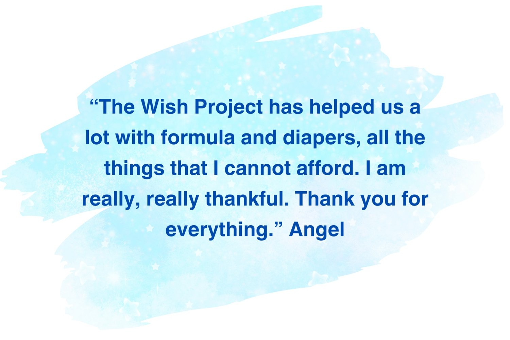
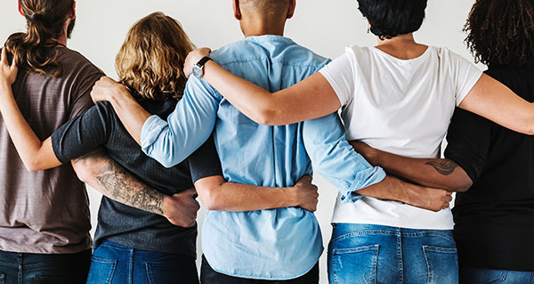

Volunteer
To get started, please take a moment to complete an application form: here.
About three thousand people (individuals, community groups, and corporate groups) volunteer their time at our warehouse every year to help us serve the homeless and low income population in our community. With our small staff, we would never be able to do what we do without our group of loyal and hard-working volunteers.
Because we are a fast-paced working warehouse, we require all volunteers to be at least 15 years old to volunteer inside the warehouse.
Volunteer tasks vary from day to day, based on the needs of clients and caseworkers, but generally involve some sort of sorting or organizing, or working with warehouse visitors. The following are regular tasks that you may be asked to work on while volunteering in the warehouse:
- Sorting incoming donations
- Working in the client clothing area
- Assisting clients as they shop for furniture and household goods and loading vehicles
- Assisting shoppers in our thrift shop
- Organizing large donation areas
- Assisting donors at the donation dock
- Kit making
- Helping with seasonal projects such as Mother’s Day gift bags, Backpack Attack, Holiday Magic, BITS Bags, and Birthday Bags

Volunteer Off-site
There are many ways in which you can help us from home, school, or at your place of business. We encourage volunteers of all ages to reach out to find out how to best help us outside of the warehouse. We are happy to document your volunteer hours and to tailor a project to meet your groups needs. We also write great recommendations for extraordinary people that help out!
Off- site volunteers are SO important to our organization and we utilize volunteers to work on many different tasks outside of the warehouse

Sorting/organizing
We sometimes have large amounts of donations such as shoes, off season clothing, and sheets that need to be sorted and labeled. When these items are neatly organized, it makes it easier to store the items in the warehouse in a way that we can easily find and distribute to clients in need of a specific item/size.
Organize a collection for our most needed goods- reach out to find out what our greatest needs are!
Events
We all love a good theme day! Past volunteers have held baby showers for us and asked for those attending to bring diapers, wipes, and other baby necessities to donate. You can get creative and send out invitations and create your own baby registry! Other successful events include holiday parties where guests all bring unwrapped toys to donate to our Holiday Magic project, housewarming parties where guests bring new items to donate to our household kits, yard sales, bake sales, and lemonade stands. You can choose something that you really enjoy and run with it! Be sure to reach out to us to find out what items are most needed.
Kit making
Occasionally we have an abundance of items that need to be made into kits (feminine products, socks, underwear, etc.) and we look for volunteers to pick up these items and assemble kits off site. These tasks vary based on need, and aren’t always available, but we encourage volunteers to reach out if interested.
